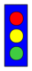
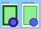

Chapter 3 A Sense of Style: Working with CSS
On the web, style means CSS. Cascading Style Sheets are used to indicate how the plain text of HTML should be formatted into the colorful diversity of websites and applications that you interact with every day.
SVG and CSS have an intertwined relationship. SVG incorporates CSS styling of decorative aspects of the drawing, but uses a basic layout model completely independent of CSS layout. CSS has been expanded to include so many graphical effects (formerly only available in SVG) that it has become a rudimentary vector graphics language of its own.
This chapter covers how to use CSS styles to modify your SVG graphics, and how to reference SVG images and elements in CSS code used to style HTML. It also discusses the benefits and limitations of using CSS+HTML to create graphics, including its similarities and differences with SVG, and outlines factors for you to consider when deciding between these CSS vector graphics and SVG.
Figures and Examples#
The file names link to the code view on GitHub. Beware: the linked screenshots are hi-resolution; some have very large file sizes.
View all files for this chapter on GitHub.
- Figure 3-1. A minimalist, monochrome stoplight
- Example 3-1. Stylesheet for monochrome printing of an SVG
-
- Live SVG file, grouped-stoplight-print-styles.svg
- Raw CSS file, grouped-stoplight-print-styles.css
- Live SVG file, grouped-stoplight-print-styles-force.svg (a version that uses the print styles, even for on-screen viewing)
- PNG screenshot, grouped-stoplight-print-styles.png
- Figure 3-2. A web page using SVG graphics as CSS backgrounds, bullets, and borders
- Example 3-2. Using CSS properties that accept an SVG image value
- Figure 3-3. The CSS vector graphic stoplight
- Example 3-3. Drawing a simple stoplight, with CSS and HTML
-
- Live HTML file (with embedded CSS), css-stoplight.html
- PNG screenshot, css-stoplight.png
- See also the Chapter 12 files for the version with gradients
- Figure 3-X1. Media Queries in Inline versus Embedded SVG, on a 410px-wide display
- Example 3-X1. Interpretation of Media Queries in Inline versus Embedded SVG
{kind=link}
{kind=link}
{kind=link}
{kind=link}
{kind=link}
{kind=link}
{kind=link}
{kind=link}
{kind=link}
{kind=link}
{kind=link}
{kind=link}
{kind=link}
{kind=link}
{kind=link}
{kind=link}
Online Extras#
- “XML Namespaces in CSS”: You can usually ignore XML namespaces when writing CSS selectors, but that makes it all the more surprising when they cause a problem.
- “The Cascade”: The CSS cascade mostly works the same for SVG as for HTML. But that doesn't mean that it is simple.
- “Media Queries in Embedded Versus Inline SVG”
- Reference: SVG Style Properties